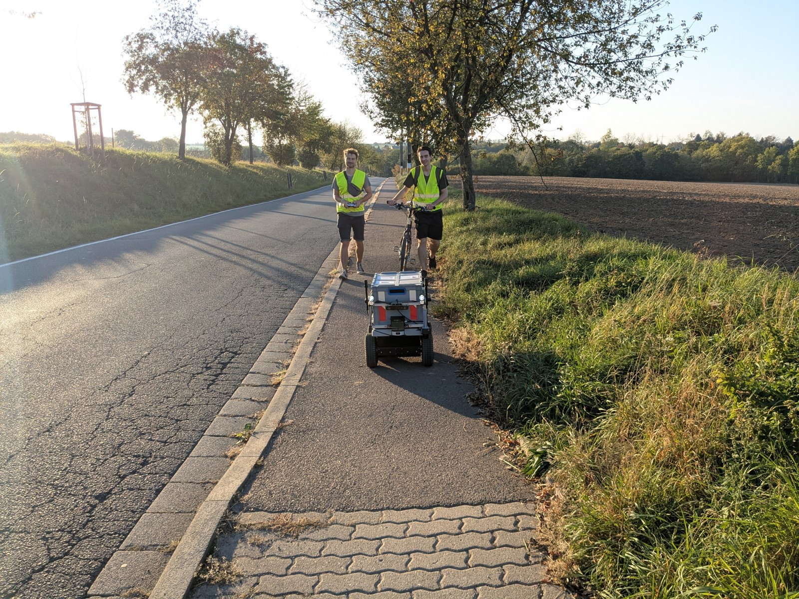

Our groundwork
Robots on footpaths are no longer science fiction
Ready for Robots (German mFUND programme, 2022–2025): multimodal maps for autonomous micromobiles — with Schkeuditz as test area.
ROSEE’s journey, 7 Oct 2026: from Freiberg to Dresden, ≈ 25 km on its own wheels (≈ 47 km including car and tram).
Lessons: grass is not an obstacle · the robot must know how wide the path is · roads without footpaths need their own rules.
 Route map and photos
Route map and photossebastianzug.github.io/RoseesRoboterReise



Photos: Sebastian Zug / TU Bergakademie Freiberg, CC BY 4.0